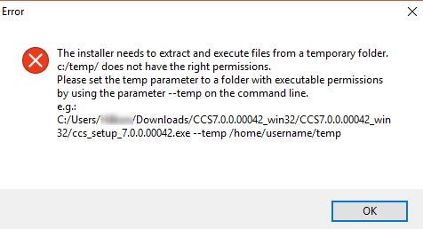
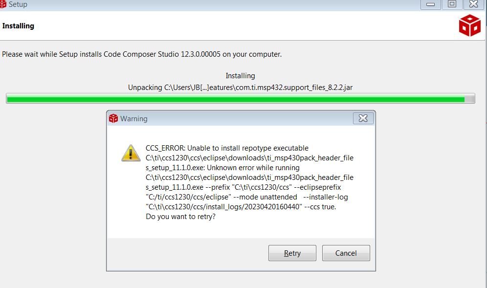
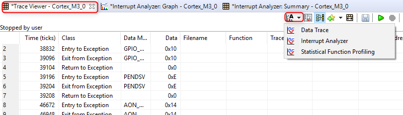
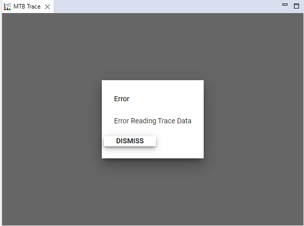

9.1. Installation¶
9.1.1. General Tips for Installing CCS¶
- Clean out all prior failed or incomplete installations (by deleting the install directory) before attempting a new one to the same directory. In Windows, use Shift+Del and in Linux and MacOS use
rm -Rfon the install directory. - If you plan to install two versions side-by-side, always use different workspaces. Sharing a workspace between two versions may cause severe impact in project building and debugging.
- Disable anti-virus (certain anti-virus software is known to cause problems). If it cannot be disabled, try the off-line installer instead of web installer.
- It is recommend to have a username that does not have any non-alphanumeric characters, and that you are installing CCS to a directory that does not have any non-alphanumeric characters.
Warning
A temporary directory using the username is created during installation, and Eclipse is unable to handle some non-alphanumeric characters. If your username does have non-alphanumeric characters, please create a temporary admin user for installing CCS.
9.1.3. Installation Fails when "Installing Eclipse"¶
If the installation fails when installing eclipse with the message: Failed to install eclipse. Cannot recover from this error., take a look at the install log and search for _JAVA_OPTIONS. If this environment variable is set, it may interfere with the Eclipse installation.
The workaround is to temporarily unset the variable, then delete the contents of your aborted installation and try reinstalling CCS. The variable can be reset after the installation is complete.
9.1.4. Installation Fails with Error About Permissions on Temporary Folder¶
If CCS installation fails with the following error, it means that the system temporary folder does not have the required permissions, OR that the username, and thereby temporary directory, has non-alphanumeric characters.

First ensure that the username, and thereby temporary directory, does not have any non-alphanumeric characters. See the General Tips for Installing CCS section for more information.
Next, make sure that the system TEMP directory has correct permissions. The CCS installer needs to be able to write to a temporary location and execute programs from it. By default, it uses the system temporary directory %TEMP% but if that directory does not have the right permissions, the installation will fail with the above error.
The solution is to:
- Make sure the system temporary directory has full permissions, or
- If you cannot change permissions on the system TEMP directory, then run the installer on a Windows command prompt with the
--tempparameter (as indicated in the message) and specify a different temp directory that has full permissions (it could be any folder that you create on your machine). For example:<ccs_installer_executable> --temp c:\mytemp
9.1.5. MacOS Installation Freezes or Prompts for Proxy Information¶
When installing CCS on MacOS Sierra, if the installation freezes or prompts for proxy information (ie. appears to require internet connection even with the off-line installer), the reason may be due to a new security feature called "Gatekeeper Path Randomization" (or "app translocation", as it's called on the API level) introduced in MacOS Sierra. (more info at this link).
A workaround is to run the following command before invoking the installer:
xattr -r -d com.apple.quarantine ccs_setup_7.1.0.00016.app
9.1.6. CCS ERROR: Unable to install repotype executable¶
There is a known issue with the MSP430 component installer on some Windows PCs that can cause the overall CCS installation to fail with the below error:

This issue is specific to the MSP430 component installer on Windows. If this issue is occuring and there is no plan to use MSP430 devices, make sure MSP430 device support is disabled for the installation.
If MSP430 support is needed, please contact CCS support and request a workaround for this issue.
9.1.7. Clearing Out An Existing Installation¶
To uninstall a failed CCS, delete the entire ccsv[x] folder. Keep in mind this will erase the install information of other CCS versions you may have installed in parallel. If in doubt, check the date and time of each directory and delete the one that matches your attempt of install.
If you need to completely wipe all information from all versions of CCS ever installed in your system, delete all workspace directories created and all directories in the locations below:
Windows:
C:\Users\<username>\.TI
C:\Users\<username>\.TI-trace
C:\Users\<username>\ti
C:\Users\<username>\AppData\Local\Texas Instruments
Linux/OSX:
~/.TI
~/.TI-trace
~/ti
~/.ti
In Windows, if the complete removal of JTAG debugger device drivers is necessary, you must follow a more thorough procedure:
- Check this typical procedure to remove device drivers using the Device Manager, but keep in mind you will have to enable the option Show hidden devices under the menu View to display all JTAG debuggers ever connected to your PC.
- With this enabled, in the directory tree look for the branches that start with Blackhawk, SD USB Based Debug Tools, Stellaris Device Firmware Upgrade, Stellaris In-Circuit Debug Interface, Texas Instruments Emulators and Texas Instruments Debug Probes.
- For every item inside these branches, right-click and select Uninstall. Also, check the box near Delete the driver software for this device.
- Also, when expanding the branch Ports, check for any relevant entries that mention one or more TI targets such as CC3200LP Dual Port, MSP Application UART1, XDS, Stellaris, etc. Repeat step 3 above for each entry.
- Similar thing with the branch Universal Serial Bus Controllers.
9.2. Startup¶
There are several other potential cases that would prevent CCS from starting up:
9.2.1. JVM Max Heap Size is Too High or Too Low¶
Sometimes the default size for the CCS JVM max heap size is either too high or too low. In those cases, it can prevent CCS from starting up. To resolve this, try adjusting the max heap size. See the Heap and JVM settings section for more information.
9.2.2. Failed to Create the Java Virtual Machine¶
This issue is usually related to java virtual memory size. Try lowering the max heap size. See the Heap and JVM settings section for more information.
9.2.3. Antivirus or Other Security Software¶
Some antivirus/security software are more aggressive than others and may block CCS for starting up. Try disabling it and see if that allows CCS to start. If so, it may be necessary to add some exception to the software to allow CCS to run properly.
9.2.4. Missing MSVC Redistributable Libraries¶
CCS (on Windows) has a dependency on some Microsoft runtime libraries. These libraries should be installed by the CCS installer. However there are some cases where these libraries fail to get installed properly, are corrupted, or conflict with other libraries. When this happens, CCS will fail to start. Sometimes the below errors will be reported:
An internal error occurred during: "CrashTrackerJob".
C:/ti/ccsv7/ccs_base/DebugServer/bin/LibraryLoader.dll: Can't find dependent libraries
An internal error occurred during: "License Acquisition".
C:/ti/ccsv7/ccs_base/DebugServer/bin/ti_xpcom.dll: Can't find dependent libraries
An internal error occurred during: "Loading device information".
Could not initialize class com.ti.utility.filesystem.DirectoryService$SingletonHolder
An internal error occurred during: "Searching for new products".
Could not initialize class com.ti.utility.filesystem.DirectoryService$SingletonHolder
The workaround is to try reinstalling the libraries. First uninstall the MSVC Redistributables using Add/Remove Programs. Then download and install those libraries from Microsoft's download site.
These types of errors may also occur during installation if you are running Windows 7 and the Windows patches are not up to date. In this case the errors will be reported in the .log file in the workspace folder.
To determine if you are missing Windows updates, please run the following command in the command prompt: WMIC QFE|find "KB2999226"
It should return information on the updates. If it returns nothing, it is likely that you're missing the update that's required to run the MSVC Runtime. You could get the update by downloading from here or by following the procedure here.
9.2.5. Corrupt Workspace Folder¶
Sometimes the cached data inside the workspace folder can get corrupted, preventing CCS from starting up. Cleaning the workspace can help. See the General IDE section for tips on how to clean the workspace folder.
9.2.6. "com/ti/dvt/energytrace" Errors¶
If CCS reports an error during launch regarding com/ti/dvt/energytrace/af/PowerActivity, com/ti/dvt/energytrace/views/Dashboard, or similar, try deleting the files in [WORKSPACE FOLDER]\.metadata\.plugins\com.ti.dvt.energytrace\ and restarting CCS.
9.3. Updates¶
9.3.1. No Update Sites Found¶
In some cases, when looking for updates (menu Help → Check for Updates or Install New Software), the error "No repository found" can appear. This is due to the fact the list of CCS update sites gets erased, thereby not listing any available updates. The exact reason that triggers that is still unknown, but the solution is simple: to restore the list, request an update bookmarks file for your CCS version on the (TI Support Forums. Then go to CCS menu Window → Preferences → Install/Update → Available Software Sites, click on Import, browse to the bookmarks file and click Ok.
9.3.2. CCS App Center Not Connecting¶
Under certain circumstances the CCS App Center may refuse to connect to its online repository and return the following error message: We are sorry, we cannot access the CCS App Center server. Please check your internet connection and press the 'Reload' button in this page.
The reason for that is not yet fully characterized, but it may be due to several conditions discussed in the e2e forum threads below:
9.3.3. Out of Memory Error When Installing Add-ons from CCS App Center¶
In some cases, when installing Add-ons from App Center (usually TI-RTOS for MSP43x or TivaC), the following error may occur:
An error occurred while collecting items to be installed session context was:(profile=epp.package.cpp, phase=org.eclipse.equinox.internal.p2.engine.phases.Collect, operand=, action=). Problems downloading artifact: osgi.bundle,com.ti.rtsc.TIRTOSmsp430.productPlugin,2.12.0.24. File has invalid content:C:UsersabcAppDataLocalTempsignatureFile7677295773172839277.jar Out of memory: Cannot verify signed content. Java heap space
To resolve this, try adjusting the max heap size. See the Heap and JVM settings section for more information.
9.3.4. Error: Computing size has encountered a problem¶
After installing updates through CCS Updates Available dialog, when prompting to restart CCS, a dialog regarding an internal error being encountered during "Computing Size" may occur. In this case, try deleting the two directories below:
[CCS INSTALL DIR]/ccsv[x]/eclipse/p2/org.eclipse.equinox.p2.core/cache[CCS INSTALL DIR]/ccsv[x]/eclipse/p2/org.eclipse.equinox.p2.repository/cache
9.3.5. Updates fail with No repository found or Connection reset or artifact for binary not available errors¶
In some cases, CCS updates may fail with these types of errors:
An error occurred while collecting items to be installed
session context was:(profile=epp.package.cpp, phase=org.eclipse.equinox.internal.p2.engine.phases.Collect, operand=, action=).
Unable to read repository at software-dl.ti.com/.../com.ti.cgt.msp430.4.4.win32_root_4.4.4.
Connection reset
or
An error occurred while collecting items to be installed
session context was:(profile=epp.package.cpp, phase=org.eclipse.equinox.internal.p2.engine.phases.Collect, operand=, action=).
No repository found containing: org.eclipse.update.feature,com.ti.c2000.support.linux,4.1.4.3
No repository found containing: binary,com.ti.c2000.support.linux_root,4.1.4.3
or
An error occurred while installing the items
session context was:(profile=epp.package.cpp, phase=org.eclipse.equinox.internal.p2.engine.phases.Install, operand=null -→
[R]com.ti.cgt.tms470.4.9.win32_root 4.9.5, action=org.eclipse.equinox.internal.p2.touchpoint.natives.actions.UnzipAction).
The artifact for binary,com.ti.cgt.tms470.4.9.win32_root,4.9.5 is not available.
If this happens, try the following steps:
- Exit out of CCS
- Delete the two directories below:
[CCS INSTALL DIR]/ccsv[x]/eclipse/p2/org.eclipse.equinox.p2.core/cache[CCS INSTALL DIR]/ccsv[x]/eclipse/p2/org.eclipse.equinox.p2.repository/cache
- Start CCS and go to menu Help → Install New Software
- From the drop down list of available software sites, select the software that you were trying to update earlier (for example, Code Generation Tools or TI C2000 Device Support as in the above two cases)
- Uncheck the box Contact all available sites during install to find required software at the bottom of the pane
- Proceed with installing the update
If the above steps do not help, try the tips in this page.
If your network requires a proxy server to be used, then make sure it is configured correctly. Check the reference below for additional details:
For CCS Linux only: The above issue can also occur if CCS was installed under sudo (or similar).
9.4. General IDE¶
CCS is based on the Eclipse open source framework and when experiencing various odd/corrupted behavior (missing menu options, "blank" views, plug-ins are missing or no longer behave properly, random crashes, etc), common tips on cleaning up your Eclipse environment also apply to CCS. Some of these tips are in the sections below:
9.4.1. Reset the Perspective¶
If the issue is strange GUI appearance (missing menu options or strange/empty looking views), often just resetting the perspective can resolve this. This can be done by selecting Window → Reset Perspective
9.4.2. Use the -clean Argument When Calling "ccstudio(.exe)"¶
CCS is launched by running the .\ccsv[x]\eclipse\ccstudio(.exe) executable. This is what is called when using the CCS desktop shortcut. However, ccstudio(.exe) can be called with some command line arguments. One of them is -clean. When calling ccstudio(.exe) with -clean, it will clean out cached data by the IDE and plug-ins upon launching CCS. Sometimes this cached data can get corrupted over time and cleaning it out can fix many problems. Note that launching CCS with -clean will cause the launch time to be slower so it is not recommend to use it every time but only when needed. For an example in Windows, to add the -clean option simply right-click on the CCS desktop shortcut, select Properties and select Shortcut tab; in the Target field, add -clean as a suffix. Example (Windows): C:\ti\ccsv8\eclipse\ccstudio.exe -clean.
9.4.3. Clean the Workspace (or try using a new one)¶
CCS stores various information in a folder called .metadata located in the user's workspace. The contents of this folder can get corrupted over time, causing various instability and strange behavior. Using a new workspace or cleaning the old workspace often helps resolve these issues. To use a new workspace, simply select a new workspace location (File → Switch Workspace). If you wish to clean the old workspace, the simplest way to do this is to delete the .metadata folder in the workspace. This will essentially reset the workspace and restore the environment to the default behavior. All projects that were in the workspace will need to be re-imported into CCS, even though they are still physically in the workspace folder. Also note that any modified preference settings will be lost (set back to the default setting). If you wish to avoid resetting those preferences, export the preferences to a file (outside the workspace) by selecting File → Export... → General → Preferences → To preference file before deleting the workspace. Once the workspace has been cleaned, those preferences can be imported back into CCS by selecting File → Import... → General → Preferences → From preference file.
Video demonstration: Clean a Code Composer Studio Workspace.
9.4.4. Heap and JVM settings¶
Usually messages such as Low Memory, Insufficient Heap, or Failed to create the Java Virtual Machine are related to the Java Virtual Machine (JVM) memory settings.
These settings are stored in the ccstudio.ini file located in the below path:
[CCS_INSTALL_DIR]/ccsv[x]/eclipse/ccstudio.ini(Linux and Windows)[CCS_INSTALL_DIR]/ccsv[x]/eclipse/Eclipse.app/Contents/Eclipse/ccstudio.ini(macOS)
The file contains two important parameters for memory management: -Xms and -Xmx. The current default values of these two options are -Xms128m and -Xmx2048m (this may vary depending on the CCS version).
The flag -Xmx specifies the maximum memory allocation pool for a Java virtual machine (JVM), while -Xms specifies the initial memory allocation pool. This means the JVM will be started with -Xms amount of memory and will be able to use a maximum of -Xmx amount of memory.
Warning
There is also an eclipse.ini file in the same directory which also defines the same parameters. Modifying the eclipse.ini file will have no impact since it is not used by CCS.
If memory usage issues are occurring, some of the tips below can help understand and analyze its root cause:
- To help monitor the heap usage, enable the heap monitor. Go to menu Window → Preferences → General → Show heap status.
- If there is too much heap memory being used, a clean up can be done by manually running the garbage collector (a small trash can icon on the heap monitor) or increase its size by closing CCS and increasing the -Xmx2048m parameter to a higher value in the file ccstudio.ini.
Warning
CCS versions (on Windows) prior to CCS 9.x were 32-bit applications, and hence limited by the 32-bit JVM that uses up to 2GB of available RAM. Hence increasing -Xmx too much can reduce the available memory for other CCS operations (debugger, etc.). In those scenarios, it is not recommended to increase the max heap size greater than 1024m (-Xmx1024m). For 64-bit CCS versions, the maximum heap size can be higher (assuming there is enough available system memory). A range from 1536-2048 is recommended. Starting with CCS 9.3.0, the default maximum heap size is set to 2048m. Also, avoid increasing the -Xms as it can reduce the available heap that can be freed. Note that all CCS versions for Linux and macOS are 64-bit application.
- If the project uses RTSC/TI-RTOS, sometimes opening the .cfg file on the Gconf utility tool can use quite a lot of heap.
- If the project is very large, the indexer can use quite a lot of heap memory while indexing everything. The heap usage should get back to manageable levels as soon as this process finishes.
- If the target configuration has a very large number of devices in the same scan chain, the heap can be excessively used.
- Physical memory on the host matters. Although most of the systems nowadays have at least 8GB of RAM, a lower amount can be prone to problems.
Warning
On systems that do not meet the recommended 8GB of RAM, a large maximum heap size value can potentially cause overall system performance issues. Check the -Xmx and make sure the value is a reasonable one that will not consume too much of the whole system memory. What this value is will depend on the system, and some experimentation may be required to find the best setting.
Unfortunately memory usage is very difficult to minimize due to the thorough mapping performed by the Indexer or the added features on the debugger (Register views, etc.). One attempt to reduce this is to disable certain cores to be shown when the debugger is launched (done via the Debug Configurations settings), or disable the indexer or reduce its scope. To do this, right click on the Project → Properties → C/C++ General → Indexer. Before accessing this option, make sure to click on the Show Advanced Settings link at the bottom of the properties dialog box.
9.4.5. GTK3 (for CCS Linux)¶
There are several known compatibility issues between some versions of CCS Linux and GTK3. This incompatibility can cause various views to flicker, or display incomplete/empty content. To work around this issue, set the SWT_GTK3 environment variable to 0 and then launch CCS.
Example:
Open a terminal and type:
> export SWT_GTK3=0
then (in the terminal), browse to [CCS INSTALL DIR]/ccs/eclipse and run ./ccstudio.
9.4.6. Failed to create the part's controls Errors (for CCS Linux)¶
This error may appear when opening one of the jxbrowser based views (Resource Explorer, Getting Started, App Center, etc). The most common cause of this error is some missing dependencies by the jxbrowser libraries. Try running ldd on the libaries in [CCS INSTALL DIR]/ccs/eclipse/configuration/.jxbrowser-chromium-lib to find any missing dependencies that must be resolved.
9.5. Resource Explorer¶
9.5.1. Check your Internet Connection¶
A poor internet connection may cause Resource Explorer to timeout when attempting to sync with the server. Try again when you have more bandwidth available.
9.5.2. Check the Proxy Setting¶
If Resource Explorer is unable to connect to the internet it may be an issue with the proxy setting. Ensure the setting is correct by performing the following steps:
- Open the Preferences dialog (menu Window → Preferences)
- Type proxy in the search box
- Select Network Connections
- Under Active Provide, select Native
- Click OK
- Close and restart CCS twice
9.5.2.1. TI Cloud Agent Socket Error (CCS macOS)¶
Resource Explorer may have issues detecting the proxy on some macOS environments, resulting in a cloud agent proxy error. In these cases, the user can manually enter the proxy for cloud agent.
In the file [CCS INSTALL DIR]\ccs\tirex4\ti-rex-core\out\cloudagent\entry-module.js:
Replace the lines
const httpProxy = proxy || '';const httpsProxy = proxy || '';
With the relevant proxy values
const httpProxy = "<HTTP PROXY ADDRESS>:<PORT NUMBER>";const httpsProxy = "<HTTPS PROXY ADDRESS>:<PORT NUMBER>";
9.5.3. Clear the Resource Explorer Cache¶
- All versions: Try deleting the
tirex-localserver-[version]folder inC:\Users\[username]\tiand restarting CCS. - CCS version 9.3 and greater: In addition to the above, try also cleaning the workspace: Clean the Workspace (or try using a new one)
9.5.4. Clear the CCS Browser Cache¶
Try deleting both the:
- Chromium browser user cache folder
[WORKSPACE FOLDER DIR]/.jxbrowser.userdata - Chromium browser system cache folder
[CCS INSTALL DIR]/ccs/eclipse/configuration.jxbrowser.bin
9.5.5. Check for Running Processes¶
Another potential issue is that if there is an extra "node" process running. Close Resource Explorer. Check Task Manager or Activity Monitor and look for node. If one is running, kill it. Start Resource Explorer.
9.5.6. Logs¶
See: Diagnostic Logs
9.6. Project Management and Build¶
For errors encountered during project import or build, refer to this troubleshooting page: Project Import and Build errors in CCS.
9.7. Debug¶
For issues encountered during a debug session (launching a debug session, target connectivity issues, crashes experienced during debugging, etc), see/try the following below. Note that cleaning the workspace can also help resolve debugger issues.
9.7.1. JTAG Connectivity Issues¶
If an error happened during the process of launching the debugger or any JTAG specific issues, see: Debugging JTAG Connectivity Problems.
Warning
If running CCS on a Linux host, please make sure the driver install script is run as superuser using sudo after installation. See: CCS Linux Host Support.
9.7.2. Data Verification Issues¶
If a data verification error occurs when loading a program, see: Troubleshooting CCS - Data Verification Errors.
9.7.3. Delete the debug launch configuration¶
A launch configuration is a configuration file that Eclipse creates when a debug session is started - it caches the information on which target configuration to use, target options and several other settings. To delete the debug launch configuration, Go to menu Run → Debug Configurations... and under Code Composer Studio - Device Debugging, select the name of your launch configuration and delete it.
9.7.4. Delete the .launch File¶
The .launch file is created when the Debug button is used to start a debug session for the project (and not independently from the Target Configurations view). To delete the file, open a file browser or a terminal and go to the project directory and check if a directory called .launches exists. If so, delete the file inside it. It typically has the extension .launch.
9.7.5. Delete Target Cache Files¶
CCS has a utility called fsclean that removes the most important cache files. This utility is typically installed under [CCS INSTALL FOLDER]/ccsv[x]/ccs_base/common/bin.
The cache files removed by fsclean are saved in a user and CCS installation specific location:
- Windows: the location is:
C:\Users\[username]\AppData\Local\Texas Instruments\CCS\[CCSV[x] INSTALL FOLDER]\0\0. - Linux/OSX: there is a hidden directory named
.ti/[CCSV[x]INSTALL FOLDER]/0/0and located in the user area. The location is~/.ti.
Trace cache files are usually saved in similar locations:
- Windows: the location is:
C:\Users\[username]\.TI-trace - Linux/OSX: there is a hidden directory named
.TI-traceand located in the user area. The location is~/.TI-trace.
9.7.6. CCS Freezes During Debug¶
CCS may sometimes freeze due to something in the system itself (PC, USB issues, video card issues, etc.).
In other occasions, it may appear frozen when it is waiting for a JTAG debug operation to complete. This can be caused by a communications failure between the host and the target, or due to the application software running on the target that causes the JTAG debugger to lose sync with the connected core and keep retrying the operation.
In these cases it is recommended to follow the sequence below to try to pinpoint the source of the issue:
- Turn off the board. The JTAG debugger will detect a power failure if it is still "alive" and usually indicates an issue with the running application on the target. CCS control is recovered.
- Unplug the JTAG debugger from the USB port. CCS will detect the JTAG debugger is non-existing anymore and may indicate an issue with the JTAG debugger itself. CCS control is recovered.
- Kill CCS from the Task Manager/using the console. This indicates the issue is on CCS itself, either caused by an internal error or by the interactions between itself and the JTAG debugger. Also, keep in mind that CCS may need some time to recover after unplugging the JTAG debugger, but that rarely goes longer than 30 seconds.
9.7.7. Hardware Trace Issues¶
For general UI issues such as trace views not opening or displaying any data, try clearing the target cache files as mentioned in section Delete Target Cache Files and also cleaning the workspace folder as mentioned in section Clean the Workspace (or try using a new one).
In some cases, the older trace tools (Statistical Function Profiling, Interrupt Profiling, etc.) may refuse to open when selecting it from the menu. This problem can persist across CCS restarts. One thing to try is deleting the appropriate subfolder in the DVT folder of the current workspace ([WORKSPACE FOLDER DIR]/dvt/CCSAnalysis/[TOOL]). This can even be done while CCS is running.
In cases where trace data is successfully collected but the corresponding graph view is empty, reopen the graph view by going to the Trace Viewer view and pressing the Analyze button to select the relevant graph.

9.7.8. MTB Trace Issues¶
The below error may occasionally appear when trying to use MTB trace:

In such cases, try closing the MTB Trace view and reopening it.
9.7.9. RTOS Analyzer Issues¶
For general UI issues such as various views not opening or displaying any data, try clearing the target cache files as mentioned in section Delete Target Cache Files and also cleaning the workspace folder as mentioned in section Clean the Workspace (or try using a new one).
In some cases, the various views (Printf and Error Logs, Execution Analysis, etc.) may refuse to open when selecting it from the menu. This problem can persist across CCS restarts. One thing to try is deleting the DVT folder of the current workspace ([WORKSPACE FOLDER DIR]/dvt). This can even be done while CCS is running.
9.7.10. CCS ERROR: Invalid CIO command (x) in the CIO buffer at address (0xA000) was not recognized. Please check the device and program memory maps.¶
This is a known issue with CCS versions 12.2.0+ when running F28x programs that use CIO. To workaround the issue, enable the When running option udner Disable interrupts in the debugger Program/Memory Load Options.
9.8. Getting Support¶
If the troubleshooting tips mentioned above do not help resolve the issue, please contact CCS Support. When contacting a CCS support personnel, it is always very helpful to provide any Diagnostic Logs associated with the issue.
9.9. Diagnostic Logs¶
Diagnostic logs are often generated when an issue occurs with CCS. These logs can contain valuable information pertaining to the root cause of the issue. The information in these logs can be a bit cryptic, hence it is recommended to provide these logs to TI support personnel when Getting Support. For more information on these logs, please see the article: CCS Diagnostic Logs.